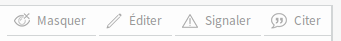

Les forums¶
Il y a sur Zeste de Savoir un espace communautaire permettant aux membres d’échanger entre eux sur divers sujets. Cet espace est communément appelé « forums ».
L’URL permettant d’accéder à ce service est simplement : /forums.
Le découpage des forums¶
La modération des forums¶
Sur Zeste de Savoir, une modération des forums, autant sur les sujets que sur les messages qu’ils contiennent, est faite par les membres possèdant un certain rang. Cette dernière permet d’éviter tout débordement ou autre.
La modération des sujets¶
Tout d’abord, il y a une posibilité de faire de la modération par sujet. Ici, cette modération s’effectue grâce aux liens se trouvant dans la barre latérale (sidebar, zone se trouvant sur le côté gauche de la page).

Nous retrouvons ici trois items :
Fermer le sujet : ici, le but est de fermer le sujet, ce qui empêchera quiconque de poster dedans. Un cadena apparaîtra aussi à côté du sujet sur la liste des sujets de la catégorie et l’encart suivant fera alors son apparition sur le sujet en lui-même :

Marquer en post-it : le sujet sera mis en post-it sur la catégorie dans laquelle il se trouve. Ce qui fait qu’il surpassera tous les autres sujets, et cela même si une réponse plus récente vient d’être postée dans un autre sujet. Il ne pourra jamais se retrouver en-dessous des autres. Lors de la mise en post-it, une épingle apparaît à côté du sujet dans la catégorie où il se trouve.

Déplacer le sujet : cet item permet de faire un déplacement de sujet, au cas où un membre se serait trompé en postant. Cela évite qu’il ait à recréer un sujet et donc un doublon de celui-ci. Le déplacement se fait via une modale :

La modération des messages¶
Il est aussi possible d’effectuer la modération plus finement, en ciblant des messages en particulier dans des sujets. Cela se fait grâce aux différents liens qui se trouvent sur les messages :

Ici, les différents choses que vous pouvez faire, sont :
Masquer : cela, rend la lecture du message impossible par les autres membres. Mais l’emplacement du message reste présent, comme le montre la capture ci-dessous. Vous pouvez également contaster sur cette capture que vous avez, avec un certain rang, la possibilité de démasquer le message. Avec ce dernier, vous avez la possiblité de masquer tous les messages des forums. Cependant, un membre peut masquer de lui-même ses propres messages.

Éditer : en cliquant ici, vous accéderez à l’interface d’édition du message. En tant que modérateur, vous pouvez éditer tous les messages des forums. Dès lors, cet encart apparaît :

Signaler : cela permet d’envoyer une demande d’intervention à l’équipe de modération du site. Ce bouton est accessible à tous les membres, qu’ils soient modérateurs ou simples membres.
Citer : permet de citer un message lors de la rédaction d’une réponse. Ce bouton n’est pas un résultant de votre rang.
Les filtres sur les sujets¶
Dans un forum¶
Il existe actuellement 3 filtres pour filtrer les sujets dans un forum :
Sujets résolus (
solve)Sujets non résolus (
unsolve)Sujets sans réponse (
noanswer)
Il suffit d’ajouter ?filter=<filtre> à l’URL en remplaçant <filtre> par l’un des 3 filtre ci-dessus.
Suivre un sujet¶
Être notifié sur le site lui même¶
Vous pouvez « suivre » un sujet directement sur le site en cliquant sur « Suivre un sujet ». Cela signifie que lorsqu’un nouveau message sera posté sur le sujet, l’icône de notification vous en informera.
Dès lors, vous pourrez par un simple clic vous rendre au dernier message non lu.
Pour repérer qu’un message est lu ou pas, nous utilisons côté backend la classe zds.forum.models.TopicRead qui retient la date de dernière lecture du topic.
De la même manière nous utilisons la classe zds.notification.models.TopicAnswerSubscription pour retenir le fait que vous suivez ou non un sujet.
Pour suivre un sujet, deux méthodes sont envisageables :
Y participer : dès que vous y écrivez une réponse, vous suivez automatiquement le sujet.
Cliquer sur « Suivre le sujet » dans la sidebar.
Pour cesser de suivre un sujet, et ne plus être notifié de son activité, vous pouvez :
Vous rendre sur le topic et cliquer sur « Ne plus suivre » en haut de la sidebar.
Vous rendre sur n’importe quelle page du forum, survoler le titre du sujet et cliquer sur la croix qui apparaît alors.